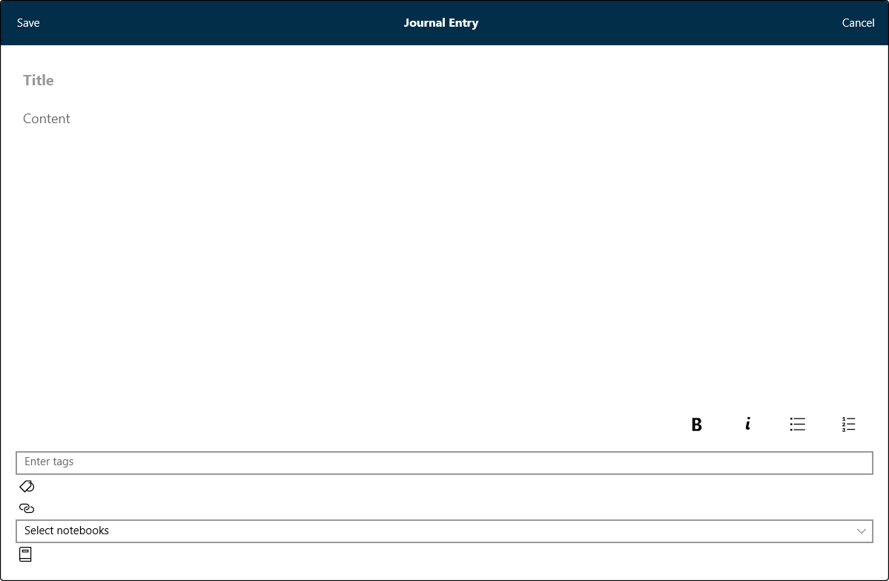

How Do I Use Journal Entries - Silent Video
How Do I Use Journal Entries - Silent Video How Do I Use Journal Entries - Silent Video
Journal entries are like special study notes that help you to collect your spiritual thoughts and impressions, no matter what you're studying. You can create a new journal entry wherever and whenever because a journal entry exists on its own, without the need to be anchored to anything else in Gospel Library.
The journal entry feature is intended as a study tool for recording thoughts related to your gospel studies, not for personal journaling.
You can create a new journal entry by using the New Journal Entry button ( ) on the Annotate ribbon or by using the + New button in the Journal Entries tab of the Annotations page.
) on the Annotate ribbon or by using the + New button in the Journal Entries tab of the Annotations page.
Like a note, a journal entry has a title and content. You can also add tags and links to your journal entries and include your journal entries in as many notebooks as you would like.c 
Like with all annotations, you can see a list of your journal entries in the Annotations pane. Simply open the Annotations page and select the Journals Entries tab.
Because journal entries have their own home in the Annotations page ( ), they can be a helpful tool for creating lessons and writing talks.
), they can be a helpful tool for creating lessons and writing talks.
In the Annotations pane, you can edit, delete, and share your journal entries.
Journal Entriess can be managed using by selecting the 'Notes' button on the navigation bar and then choosing the 'Journal Entries' tab.
The number of entries is shown in parenthesis to the right of the 'search' box. The functions of the five controls are listed in the table below.
| Filter | The highlights are listed by either the color used or the book they came from. The desired color or book is selected from a pull-down menu. |
| Sort by | The highlights may be sorted by 'newest to oldest' or 'oldest to newest' |
| Search | Allows the entry of a search string. Press the 'search' icon to begin the search. |
| Details | Lists the number of both synced and unsynced annotations by each annotation type. |
| Sync | Synchronizes the local annotations with the annotations stored on the network. |